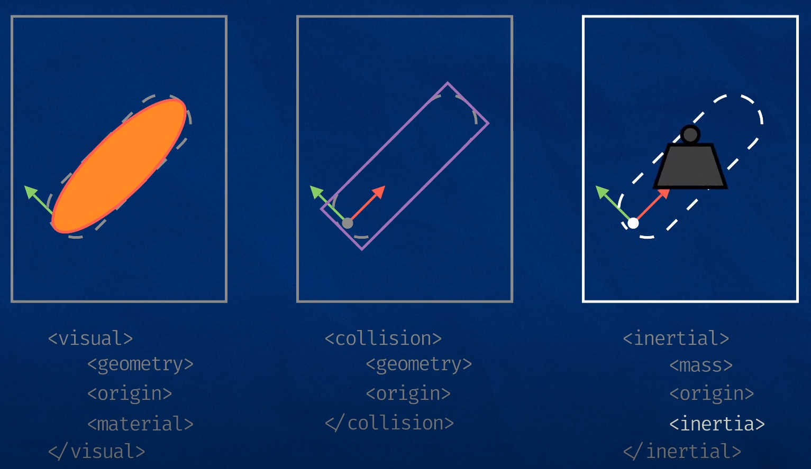
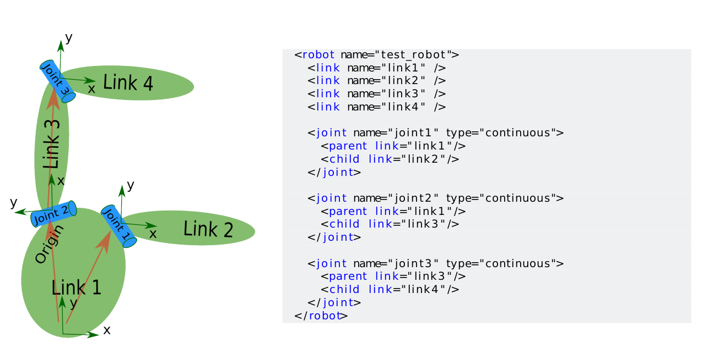
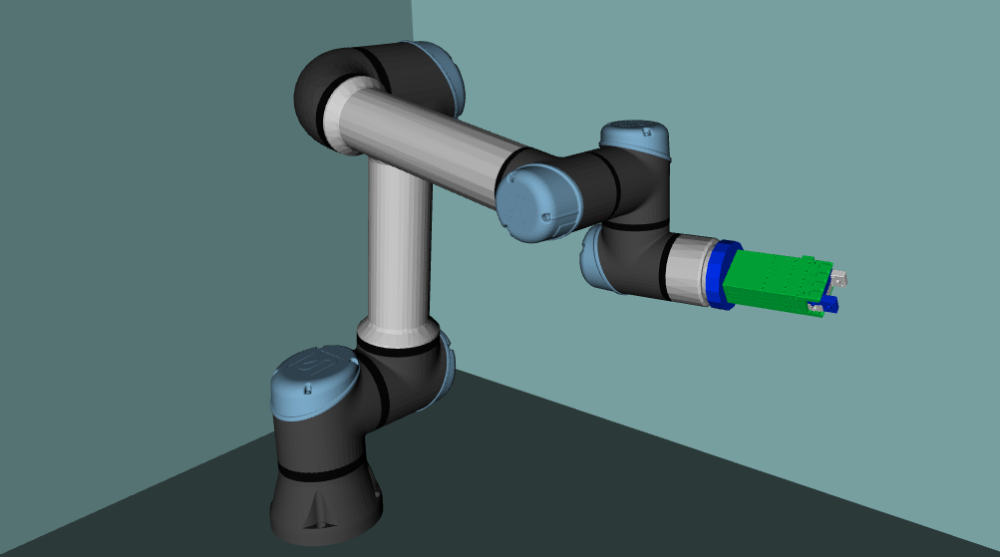
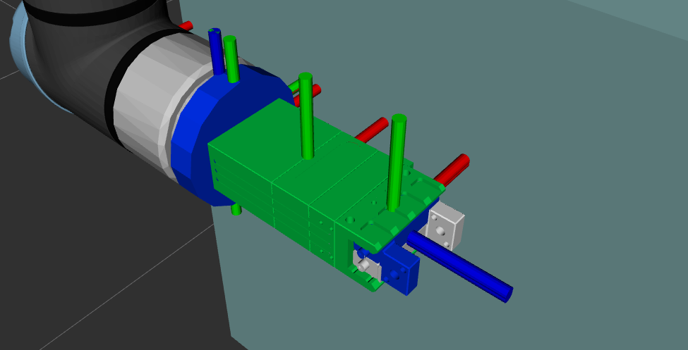
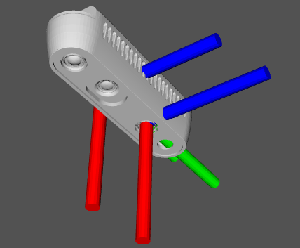
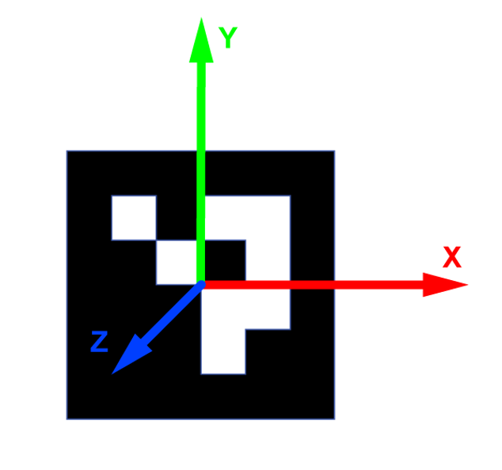
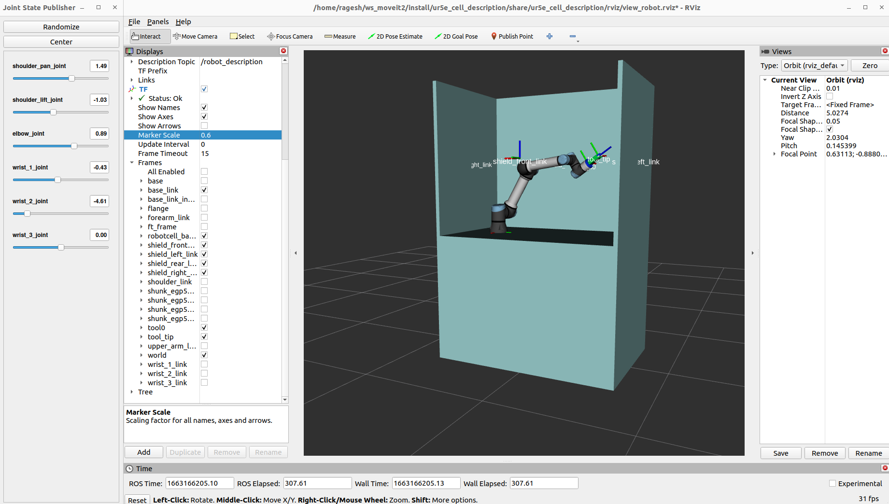

layout: true <div class="header"><img src="https://rosin-project.eu/wp-content/uploads/rosin_ack_logo_wide.png" style="background-color:transparent"/></div> <div class="footer"><img src="https://www.ipa.fraunhofer.de/content/dam/ipa/ipa.svg" /><p>© Fraunhofer IPA</p></div> <div class="triangle"></div> --- # Robot Description ## Understanding how the world is formally described <div> <center> </center> </div> --- # Contents 1. **URDF** - Universal Robot Description File 2. **XACRO** - XML Macros 3. **Setting up a Workcell** --- # Motivation - When we create a robotic system, there may be many different software components that need to know about the physical characteristics of the robot. All of this information needs to be in one common location, where any software component can reference it. - This creates a need to formally describe the robotic system in a human readable and platform independent way. ### The formal description of the world is called as robot description and is stored in a URDF file. --- # Unified Robot Description Format(URDF) - URDF provides a human readable and platform independent way to define robots, sensors, and scene objects - URDF describes a robot as a tree of links, that are connected by joints. - The links represent the physical components of the robot, and the joints represent how one link moves relative to another link, effectively defining the location of the links in space. * Collission properties * Visual properties * Joints and Links * Joint dynamics - Friction - Damping * Physical properties - Inertia --- ## Joint Types in URDF URDF supports the following types of joints: - **Revolute** - rotates along an axis, has limited range - **Continuous** - rotates around an axis, has no limits - **Prismatic** - slides along an axis, has limited range - **Fixed** - simplest, constant, not really a "joint" - **Floating** - allows motion for all 6 DoF. - **Planar** - allows motion in a plane perpendicular to an axis --- # URDF Syntax ## Robot tag and XML declaration XML files usually have a xml declaration followed by a single root tag. ```xml <?xml version="1.0"?> <robot name="my_robot"> ... all the rest of the tags ... </robot> ``` For URDF files the root tag will be `<robot> </robot>` tag and the name attribute lets us specify the name of the component. --- ## URDF Syntax ### Link Tag A link tag lets us specify the name of a link, as well as some additional characteristics: visual, collision, and inertial properties 1. **Visual** - This is what we see in RViz and Gazebo. - **Geometry** - box/ cylinder / sphere with size parameters, or a mesh in the form of .stl or .dae - **Origin** - an offset for the geometry so it doesn’t need to be centred around the link origin - **Material** - We can specify the name of a declared material, or describe the colour directly. 2. **Collision** - This is used for physics collision calculations. - **Geometry** - Same options as for visual - **Origin** - Same options as for visual. 3. **Inertial** - This is also used for physics calculations, but determines how the link responds to forces. - **Mass** - Mass of the link - **Origin** - The centre of mass (a.k.a centre of gravity). - **Inertia** - The rotational inertia matrix. It describes how the distribution of the mass will affect rotation. --- ## URDF Syntax ### Link Tag This image shows the overall structure of a link tag <div> <center>  </center> </div> --- ## URDF Syntax ### Joint Tag Each joint will have the following - **Name** - A name for the joint. - **Type** - The joint type (fixed, prismatic, revolute, and continuous). - **Parent and child links** - Which links this joint defines a relationship between - **Origin** - The relationship between the two links, before any motion is applied - **Axis** - Which axis to move along or around - **Limits** - Physical actuation limits, which may be expected by other parts of the system. These can include: - Upper and Lower position limits - in metres/radians - Velocity limits - in m/s or rad/s - Effort limits - in N or Nm --- ## URDF example :Setting up a 3 DOF robot <div> <center>  </center> </div> --- ## URDF example :Adding dimensions ```xml <robot name="test_robot"> <link name="link1" /> <link name="link2" /> <link name="link3" /> <link name="link4" /> <joint name="joint1" type="continuous"> <parent link="link1"/> <child link="link2"/> <origin xyz="5 3 0" rpy="0 0 0" /> </joint> <joint name="joint2" type="continuous"> <parent link="link1"/> <child link="link3"/> <origin xyz="-2 5 0" rpy="0 0 1.57" /> </joint> <joint name="joint3" type="continuous"> <parent link="link3"/> <child link="link4"/> <origin xyz="5 0 0" rpy="0 0 -1.57" /> </joint> </robot> ``` --- ## URDF example :Completing kinematics ```xml <robot name="test_robot"> <link name="link1" /> <link name="link2" /> <link name="link3" /> <link name="link4" /> <joint name="joint1" type="continuous"> <parent link="link1"/> <child link="link2"/> <origin xyz="5 3 0" rpy="0 0 0" /> <axis xyz="-0.9 0.15 0" /> </joint> <joint name="joint2" type="continuous"> <parent link="link1"/> <child link="link3"/> <origin xyz="-2 5 0" rpy="0 0 1.57" /> <axis xyz="-0.707 0.707 0" /> </joint> <joint name="joint3" type="continuous"> <parent link="link3"/> <child link="link4"/> <origin xyz="5 0 0" rpy="0 0 -1.57" /> <axis xyz="0.707 -0.707 0" /> </joint> </robot> ``` --- ## The Created Kinematic Chain By making use of `tf2_tools/view_frames` one could display the created kinematic chain: ```shell ros2 run tf2_tools view_frames ``` <div> <center> <img src="resources/4_3dof_viz.png" width="200px"> </center> </div> --- # Best Practices ## Naming Conventions - Keeping our links/joints paired, and using the suffix `_link` and `_joint` (e.g. `arm_link` and `arm_joint`) - Follow the ROS conventions for [manipulators](https://gavanderhoorn.github.io/rep/rep-0199.html) - Follow the ROS conventions for [mobile platforms](https://ros.org/reps/rep-0105.html) --- # XACRO ### Until now: - Manual calculation of joints dimensions - Manual copying of URDF if a second robot is to be used - No constant definition available ### XACRO - Cleaning up URDF files - Constants - Simple math - Macros (repeatibility) --- ## Introducing XACRO #### xacro - short for XML macro - To enable the use of `xacro` in our file, add robot tag ```xml <robot xmlns:xacro="http://www.ros.org/wiki/xacro"></robot> ``` - When we want a `URDF` we need to run the `xacro` software over the files first, which will process them into a single, complete `URDF file`. <div> <center> </center> </div> - Even if we had multiple files going in, it would publish as one message to the `robot_description` topic. --- ## XACRO ### Adding constants ```xml <xacro:property name=" width " value=" 0.2 " /> <xacro:property name="bodylen" value=" 0.6 " /> <link name=" base_link "> <visual> <geometry> <cylinder radius="${width}" length="${bodylen}" /> </geometry> <material name=" blue " /> </visual> </ link> ``` Will generate ```xml <link name=" base_link "> <visual> <geometry> <cylinder radius="0.6" length="0.2" /> </geometry> <material name=" blue " /> </visual> </ link> ``` --- ## XACRO ### Adding constants ```xml <xacro:property name=”robotname” value=”marvin” /> <link name=”${robotname}s_leg” /> ``` Will generate ```xml <link name=”marvins_leg” /> ``` --- ## XACRO ### Conditional blocks ```xml <xacro : if value="<expression>"> < . . . some xml code here . . .> </xacro : if> <xacro:unless value="<expression>"> < . . . some xml code here . . .> </xacro:unless> ``` ```xml <xacro:property name=" var " value=" useit " /> <xacro : if value="${var==’useit’} " /> <xacro : if value="${var.startswith(’use’) and var.endswith (’it’)}" /> <xacro:property name="allowed" value=" [1 ,2 ,3] " /> <xacro : if value="${1 in allowed}" /> ``` --- ## XACRO ### Math ```xml <xacro:property name="wheel_diameter" value="0.5" /> <xacro:property name="reflect" value="-1" /> <cylinder radius="${wheel_diameterm/2} " length=" 0.1 " /> <origin xyz="${ reflect*(width+.02)} 0 0.25" /> ``` ```xml <xacro:property name=" pi " value="3.1415926535897931" /> <circle circumference="${2.5*pi}" /> ``` - All of the math is done using floats ```xml <link name="${5/6}"/> ``` - evaluates to ```xml <link name="0.833333333333"/> ``` --- ## XACRO ### Macros ### [Using Xacro to Clean Up a URDF File](http://wiki.ros.org/urdf/Tutorials/Using%20Xacro%20to%20Clean%20Up%20a%20URDF%20File) ```xml <xacro:macro name=" default_origin "> <origin xyz="0 0 0" rpy="0 0 0" /> </xacro:macro> <xacro:default_origin /> ``` Will generate ```xml <origin rpy="0 0 0" xyz="0 0 0" /> ``` --- ## XACRO ### Parametrized Macros - You can also parameterize macros so that they don’t generate the same exact text every time. When combined with the math functionality, this is even more powerful. ```xml <xacro:macro name="inertial_box" params="mass x y z *origin"> <inertial> <xacro:insert_block name="origin"/> <mass value="${mass}" /> <inertia ixx="${(1/12) * mass * (y*y+z*z)}" ixy="0.0" ixz="0.0" iyy="${(1/12) * mass * (x*x+z*z)}" iyz="0.0" izz="${(1/12) * mass * (x*x+y*y)}" /> </inertial> </xacro:macro> ``` This can be used as, ```xml <xacro:inertial_box mass="5" x="${robotcell_length}" y="${shield_thickness}" z="${robotcell_height}"> <origin rpy="0 0 0" xyz="0 0 0" /> </xacro:inertial_box> ``` --- ## Executing XACRO - Change directory to the urdf directory of the ROS package and then export urdf files ```shell ros2 run xacro xacro robot_model.urdf.xacro > robot.urdf ``` - To check urdf files during development ```shell check_urdf <(xacro workcell.urdf.xacro) ``` --- # Setting up Robot Workcell The setup for today's demonstration has 4 static components described in URDF *(XACRO)*: * **Web Camera** - to detect AR tags * **Workcell** - workcell of the robot * **UR5e** - robotic arm * **ShunkEGP50** - robot gripper It also includes an AR Tag that is dynamically placed in simulation - This is why the tag is not described in URDF --- ## UR5e Robot <div> <center>  </center> </div> --- ## ShunkEGP50 Gripper <div> <center>  </center> </div> --- ## Camera sensor <div> <center>  </center> </div> --- ## AR Tags <div> <center>  </center> </div> --- ## Result: Complete Workcell <div> <center>  </center> </div> --- <h1> <center> End of Presentation </center> </h1> <h2> <center> Questions ? </center> </h2>